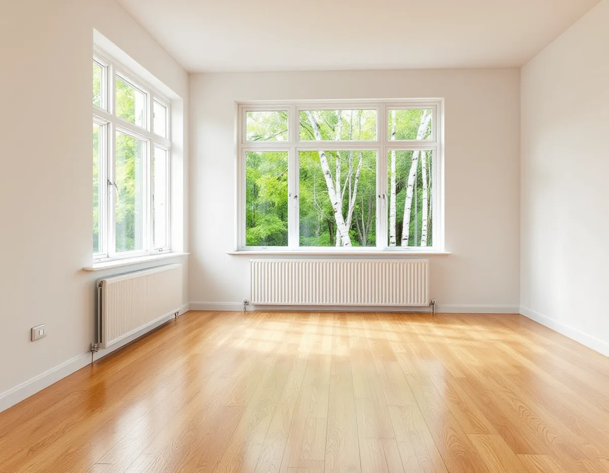

Platsbesök
Vi tittar på golvet, frågar efter golvvärmen och mäter fuktkvot och luftfuktighet.
Ligger trägolvet på golvvärme måste ytbehandlingen göras vid rätt temperatur, och golvet måste få värmas upp igen i lugn takt. Geal Entreprenad AB slipar och ytbehandlar trägolv i villor och fritidshus på Ekerö, och i ett hus med golvvärme går vi igenom värmen med dig innan vi börjar.

Ekerö kulturmiljöprogram från 2015 beskriver hur kommunen har fördubblat sin befolkning sedan 1970 och hur framför allt villabebyggelsen har ökat. Kring östra Ekerö och södra Färingsö dominerar småhus från 1900-talets andra hälft, och under 1990- och 2000-talet tillkom inte mindre än 2 475 villor i kommunen, framför allt i anslutning till befintliga villaområden och byar.
På östra Ekerö nämner programmet Väsby med enhetlig bebyggelse från tidigt 1970-tal och Närlunda, som domineras av villor från 1960-talet. I ett hus från vilket av decennierna som helst kan golvvärmen vara original eller ha kommit till vid en senare ombyggnad. Vi frågar efter värmesystemet redan vid platsbesöket, eftersom det påverkar både tidplanen och valet av ytbehandling.
Golvbranschens riktlinjer för lackering, LACK 22, säger att yttemperaturen på ett golv med golvvärme kontrolleras med en termometer som läggs på golvet. Under behandlingen ska den vara 20 ± 2 grader, och golvets yta ska vara kallare än rumsluften, annars torkar lacken för fort. Efter behandlingen kan temperaturen höjas successivt under 2–3 dagar till normal drift, men inte över 27 grader på golvytan.
Riktlinjerna för oljebehandling, OLJA 22, har samma ordning: 20 ± 2 grader under ytbehandlingen, och därefter en successiv höjning under 2–3 dygn till högst 27 grader. Riktlinjerna påpekar också att man ska vara aktsam vid temperaturer under 15 och över 25 grader och vid starkt solljus, eftersom det påverkar torktiderna.
För dig betyder det att golvvärmen behöver vara så låg att golvets yta håller kring 20 grader när vi stryker, och att den sedan höjs i steg. Har huset flera värmekretsar går vi igenom vilka rum som berörs.
Golvbranschens handbok Trägolv på golvvärme förklarar att golvvärme normalt ger en något lägre luftfuktighet närmast golvet. I ett rum med 30 procents relativ fuktighet vid 20 grader blir fuktigheten ungefär 20 procent vid 27 grader, om luftens fuktinnehåll inte ändras. Vintertid, när inomhusluften är torr, uppstår ofta springor mellan brädorna och skålning, och handboken skriver att det kan vara nödvändigt att använda luftfuktare för att hålla 30–60 procent.
Gränsen på 27 grader gäller enligt handboken även under mattor och möbler, där det normalt blir varmare än på omgivande ytor. En stor matta eller en bokhylla med platt botten räknas som övertäckning om den inte ventileras.
Slipningens riktlinjer, SLIP 22, säger dessutom att golvet inte ska ytbehandlas när luftfuktigheten inomhus ligger utanför 30–60 procent. I ett hus med golvvärme lägger vi därför helst ytbehandlingen utanför den kallaste och torraste delen av året, eller mäter klimatet noga innan vi börjar.
Alla trägolv rör sig inte lika mycket. Handboken anger att lamellparkett av bok och kanadensisk lönn sväller och krymper mer än andra träslag och att de i Skandinavien anses olämpliga tillsammans med golvvärme. Massiva trägolv är mer benägna att röra sig än lamellgolv, och man får räkna med en krympning på ungefär en procent av brädans bredd under normala förhållanden.
Ligger det ett sådant golv på golvvärme i ditt hus kan springorna ha med klimatet att göra snarare än med slitaget, och då är klimatet det första att se över. Vi mäter fuktkvoten och tittar på springorna innan vi föreslår något.
Ska golvet bytas, till exempel i en sommarvilla som har blivit helårshus, finns mer under golvläggare på Ekerö. En översikt över golv och ytbehandlingar finns på sidan om golvläggning.
Vi tittar på golvet, frågar efter golvvärmen och mäter fuktkvot och luftfuktighet.
Slipning, ytbehandling och antal lager står som egna poster.
Golvvärmen sänks så att golvets yta håller 20 ± 2 grader under behandlingen.
Golvet slipas i tre steg, och kanterna slipas för sig.
Lack eller olja stryks med termometer på golvet och torktid emellan.
Temperaturen höjs i steg under två till tre dagar, till högst 27 grader.
Skatteverket räknar slipning av golv som rotarbete i småhus, och till småhus räknas även fritidshus. Det är arbetad tid på plats som ger avdrag, inte material.
Avdraget är 30 procent av arbetskostnaden, högst 50 000 kr per person och år och högst 75 000 kr tillsammans med rutavdrag. Resor ger inget avdrag. Geal drar avdraget direkt på fakturan.
Golvytan, golvets skick, vilken ytbehandling du väljer och hur arbetet behöver delas upp kring golvvärmen. Efter ett gratis platsbesök får du ett skriftligt kostnadsförslag.
Parkett, trägolv, klinker och slipning.
Golvläggning i Stockholm →Takbyte, takbesiktning och plåtarbeten.
Takläggare på Ekerö →Stenhamra, Kungshatt och Adelsö.
Takrenovering på Ekerö →Utanför plan, strandskydd och eget avlopp.
Attefallshus på Ekerö →Anmälan, mjukt vatten och eget avlopp.
Badrumsrenovering på Ekerö →Nytt hus, vattenskydd och bergvärme.
Byggföretag på Ekerö →Väder, säsong och torktider på öarna.
Fasadmålning på Ekerö →Egnahem, villaområden och äldre gårdar på Ekerö.
Fasadrenovering på Ekerö →Sommarvillor och 60-talsvillor på Ekerö.
Fönsterbyte på Ekerö →Villor i Stenhamra och omgjorda sommarhus.
Golvläggare på Ekerö →Vedspis, egen brunn och nya sopsorteringen.
Köksrenovering på Ekerö →Sommarvillor, stugor och villor på Mälaröarna.
Målare på Ekerö →Takvatten, solceller och plåttak på Ekerö.
Plåtslagare på Ekerö →Altan, gäststuga och snickeri nära Mälaren.
Snickare på Ekerö →Tapet på timmer, papp och skivor.
Tapetsering på Ekerö →